Gregor Mendel and Genetics
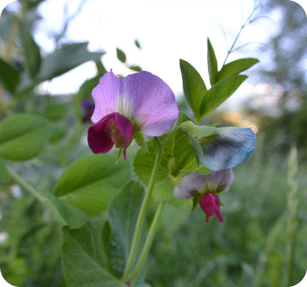
These purple-flowered plants are not just pretty to look at. Plants like these led to a huge leap forward in biology. The plants are common garden peas, and they were studied in the mid-1800s by an Austrian monk named Gregor Mendel. With his careful experiments, Mendel uncovered the secrets of heredity, or how parents pass characteristics to their offspring. You may not care much about heredity in pea plants, but you probably care about your own heredity. Mendel's discoveries apply to you as well as to peas—and to all other living things that reproduce sexually. In this chapter, you will read about Mendel's experiments and the secrets of heredity that he discovered.
Mendel's Investigations
Lesson Objectives
-
Explain why and how Mendel studied pea plants.
-
Describe the results of Mendel's experiments.
-
State Mendel's laws of segregation and independent assortment.
-
Outline the genetics of inheritance.
Vocabulary
-
allele
-
dominant allele
-
genetics
-
genotype
-
heterozygote
-
homozygote
-
hybrid
-
law of independent assortment
-
law of segregation
-
locus
-
phenotype
-
pollen
-
pollination
-
recessive allele
Introduction
People have long known that the characteristics of living things are similar in parents and their offspring. Whether it’s the flower color in pea plants or nose shape in people, it is obvious that offspring resemble their parents. However, it wasn’t until the experiments of Gregor Mendel that scientists understood how characteristics are inherited. Mendel's discoveries formed the basis of
genetics
, the science of heredity. That’s why Mendel is often called the “father of genetics.” It’s not common for a single researcher to have such an important impact on science. The importance of Mendel's work was due to three things: a curious mind, sound scientific methods, and good luck. You’ll see why when you read about Mendel's experiments.
An introduction to heredity can be seen at
http://www.youtube.com/user/khanacademy#p/c/7A9646BC5110CF64/12/eEUvRrhmcxM
(17:27).
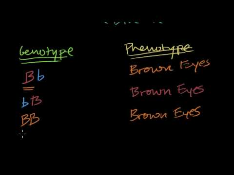
Click on the image above for more content
Mendel and His Pea Plants
Gregor Mendel was born in 1822 and grew up on his parents’ farm in Austria. He did well in school and became a monk. He also went to the University of Vienna, where he studied science and math. His professors encouraged him to learn science through experimentation and to use math to make sense of his results. Mendel is best known for his experiments with the pea plant
Pisum sativum
(see
Figure
below
). You can watch a video about Mendel and his research at the following link:
http://www.metacafe.com/watch/hl-19246625/milestones_in_science_engineering_gregor_mendel_and_classical_genetics/
.
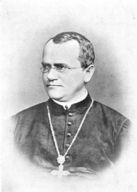
Gregor Mendel. The Austrian monk Gregor Mendel experimented with pea plants. He did all of his research in the garden of the monastery where he lived.
Blending Theory of Inheritance
During Mendel's time, the blending theory of inheritance was popular. This is the theory that offspring have a blend, or mix, of the characteristics of their parents. Mendel noticed plants in his own garden that weren’t a blend of the parents. For example, a tall plant and a short plant had offspring that were either tall or short but not medium in height. Observations such as these led Mendel to question the blending theory. He wondered if there was a different underlying principle that could explain how characteristics are inherited. He decided to experiment with pea plants to find out. In fact, Mendel experimented with almost 30,000 pea plants over the next several years! At the following link, you can watch an animation in which Mendel explains how he arrived at his decision to study inheritance in pea plants:
http://www.dnalc.org/view/16170-Animation-3-Gene-s-don-t-blend-.html
.
Why Study Pea Plants?
Why did Mendel choose common, garden-variety pea plants for his experiments? Pea plants are a good choice because they are fast growing and easy to raise. They also have several visible characteristics that may vary. These characteristics, which are shown in
Figure
below
, include seed form and color, flower color, pod form and color, placement of pods and flowers on stems, and stem length. Each characteristic has two common values. For example, seed form may be round or wrinkled, and flower color may be white or purple (violet).
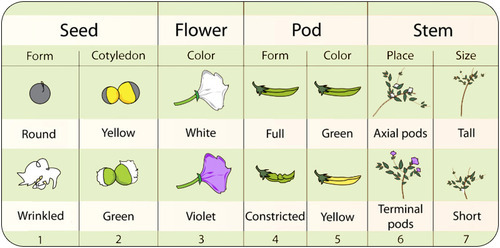
Mendel investigated seven different characteristics in pea plants. In this chart, cotyledons refer to the tiny leaves inside seeds. Axial pods are located along the stems. Terminal pods are located at the ends of the stems.
Controlling Pollination
To research how characteristics are passed from parents to offspring, Mendel needed to control pollination.
Pollination
is the fertilization step in the sexual reproduction of plants.
Pollen
consists of tiny grains that are the male gametes of plants. They are produced by a male flower part called the anther (see
Figure
below
). Pollination occurs when pollen is transferred from the anther to the stigma of the same or another flower. The stigma is a female part of a flower. It passes the pollen grains to female gametes in the ovary.

Flowers are the reproductive organs of plants. Each pea plant flower has both male and female parts. The anther is part of the stamen, the male structure that produces male gametes (pollen). The stigma is part of the pistil, the female structure that produces female gametes and guides the pollen grains to them. The stigma receives the pollen grains and passes them to the ovary, which contains female gametes.
Pea plants are naturally self-pollinating. In self-pollination, pollen grains from anthers on one plant are transferred to stigmas of flowers on the same plant. Mendel was interested in the offspring of two different parent plants, so he had to prevent self-pollination. He removed the anthers from the flowers of some of the plants in his experiments. Then he pollinated them by hand with pollen from other parent plants of his choice. When pollen from one plant fertilizes another plant of the same species, it is called cross-pollination. The offspring that result from such a cross are called
hybrids.
Mendel's First Set of Experiments
At first, Mendel experimented with just one characteristic at a time. He began with flower color. As shown in
Figure
below
, Mendel cross-pollinated purple- and white-flowered parent plants. The parent plants in the experiments are referred to as the P (for parent) generation. You can explore an interactive animation of Mendel's first set of experiments at this link:
http://www2.edc.org/weblabs/Mendel/mendel.html
.
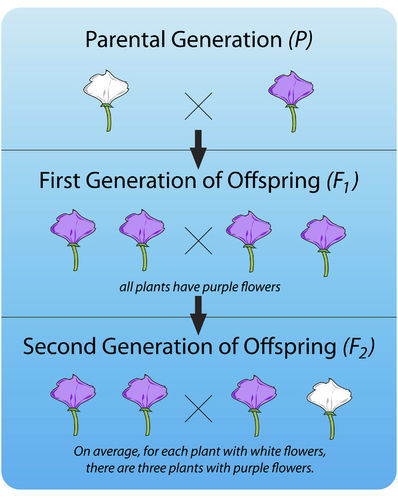
This diagram shows Mendel's first experiment with pea plants. The F1 generation results from cross-pollination of two parent (P) plants. The F2 generation results from self-pollination of F1 plants.
F1 and F2 Generations
The offspring of the P generation are called the F1 (for filial, or “offspring”) generation. As you can see from
Figure
above
, all of the plants in the F1 generation had purple flowers. None of them had white flowers. Mendel wondered what had happened to the white-flower characteristic. He assumed some type of inherited factor produces white flowers and some other inherited factor produces purple flowers. Did the white-flower factor just disappear in the F1 generation? If so, then the offspring of the F1 generation—called the F2 generation—should all have purple flowers like their parents. To test this prediction, Mendel allowed the F1 generation plants to self-pollinate. He was surprised by the results. Some of the F2 generation plants had white flowers. He studied hundreds of F2 generation plants, and for every three purple-flowered plants, there was an average of one white-flowered plant.
Law of Segregation
Mendel did the same experiment for all seven characteristics. In each case, one value of the characteristic disappeared in the F1 plants and then showed up again in the F2 plants. And in each case, 75 percent of F2 plants had one value of the characteristic and 25 percent had the other value. Based on these observations, Mendel formulated his first law of inheritance. This law is called the
law of segregation
. It states that there are two factors controlling a given characteristic, one of which dominates the other, and these factors separate and go to different gametes when a parent reproduces.
Mendel's Second Set of Experiments
Mendel wondered whether different characteristics are inherited together. For example, are purple flowers and tall stems always inherited together? Or do these two characteristics show up in different combinations in offspring? To answer these questions, Mendel next investigated two characteristics at a time. For example, he crossed plants with yellow round seeds and plants with green wrinkled seeds. The results of this cross are shown in
Figure
below
.

This chart represents Mendel's second set of experiments. It shows the outcome of a cross between plants that differ in seed color (yellow or green) and seed form (shown here with a smooth round appearance or wrinkled appearance). The letters R, r, Y, and y represent genes for the characteristics Mendel was studying. Mendel didn’t know about genes, however. Genes would not be discovered until several decades later. This experiment demonstrates that 9/16 were round yellow, 3/16 were wrinkled yellow, 3/16 were round green, and 1/16 were wrinkled green.
F1 and F2 Generations
In this set of experiments, Mendel observed that plants in the F1 generation were all alike. All of them had yellow and round seeds like one of the two parents. When the F1 generation plants self-pollinated, however, their offspring—the F2 generation—showed all possible combinations of the two characteristics. Some had green round seeds, for example, and some had yellow wrinkled seeds. These combinations of characteristics were not present in the F1 or P generations.
Law of Independent Assortment
Mendel repeated this experiment with other combinations of characteristics, such as flower color and stem length. Each time, the results were the same as those in
Figure
above
. The results of Mendel's second set of experiments led to his second law. This is the
law of independent assortment
. It states that factors controlling different characteristics are inherited independently of each other.
Mendel's Laws and Genetics
You might think that Mendel's discoveries would have made a big impact on science as soon as he made them. But you would be wrong. Why? Because Mendel's work was largely ignored. Mendel was far ahead of his time and working from a remote monastery. He had no reputation among the scientific community and limited previously published work.
Mendel’s work, titled
Experiments in Plant Hybridization
, was published in 1866, and sent to prominent libraries in several countries, as well as 133 natural science associations. Mendel himself even sent carefully marked experiment kits to Karl von Nageli, the leading botanist of the day. The result - it was almost completely ignored. Von Nageli instead sent hawkweed seeds to Mendel, which he thought was a better plant for studying heredity. Unfortunately hawkweed reproduces asexually, resulting in genetically identical clones of the parent.
Charles Darwin published his landmark book on evolution in 1869, not long after Mendel had discovered his laws. Unfortunately, Darwin knew nothing of Mendel's discoveries and didn’t understand heredity. This made his arguments about evolution less convincing to many people. This example demonstrates the importance for scientists to communicate the results of their investigations.
Rediscovering Mendel's Work
Mendel's work was virtually unknown until 1900. Then, in that year, three different European scientists—named DeVries, Correns, and Tschermak—independently arrived at Mendel's laws. All three had done experiments similar to Mendel's. They came to the same conclusions that he had drawn almost half a century earlier. Only then was Mendel's actual work rediscovered. As scientists learned more about heredity over the next few decades, they were able to describe Mendel's ideas about inheritance in terms of genes. In this way, the field of genetics was born. At the link that follows, you can watch an animation of Mendel explaining his laws of inheritance in genetic terms.
http://www.dnalc.org/view/16182-Animation-4-Some-genes-are-dominant-.html
Genetics of Inheritance
Today, we known that characteristics of organisms are controlled by genes on chromosomes (see
Figure
below
). The position of a gene on a chromosome is called its
locus
. In sexually reproducing organisms, each individual has two copies of the same gene. One copy comes from each parent. The gene for a characteristic may have different versions. The different versions are called
alleles
. For example, in pea plants, there is a purple-flower allele (B) and a white-flower allele (b). Different alleles account for much of the variation in the characteristics of organisms.
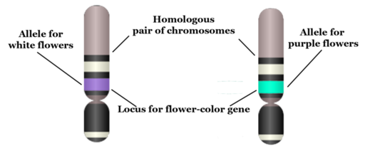
Chromosome, Gene, Locus, and Allele. This diagram shows how the concepts of chromosome, gene, locus, and allele are related. What is the different between a gene and a locus? Between a gene and an allele?
During meiosis, homologous chromosomes separate and go to different gametes. Thus, the two alleles for each gene also go to different gametes. At the same time, different chromosomes assort independently. As a result, alleles for different genes assort independently as well. In these ways, alleles are shuffled and recombined in each parent’s gametes.
Genotype and Phenotype
When gametes unite during fertilization, the resulting zygote inherits two alleles for each gene. One allele comes from each parent. The alleles an individual inherits make up the individual’s
genotype
. The two alleles may be the same or different. As shown in
Table
below
, an organism with two alleles of the same type (
BB
or
bb
) is called a
homozygote
. An organism with two different alleles (
Bb
) is called a
heterozygote
.
|
Alleles
|
Genotypes
|
Phenotypes
|
|
|
BB
(homozygote)
|
purple flowers
|
|
B
(purple)
|
Bb
(heterozygote)
|
purple flowers
|
|
b
(white)
|
bb
(homozygote)
|
white flowers
|
Table 6.2
There are two alleles,
B
and
b
, that control flower color in pea plants. This results in three possible genotypes. Why are there only two phenotypes?
The expression of an organism’s genotype produces its
phenotype
. The phenotype refers to the organism’s characteristics, such as purple or white flowers. As you can see from
Table
above
, different genotypes may produce the same phenotype. For example,
BB
and
Bb
genotypes both produce plants with purple flowers. Why does this happen? In a
Bb
heterozygote, only the
B
allele is expressed, so the
b
allele doesn’t influence the phenotype. In general, when only one of two alleles is expressed in the phenotype, the expressed allele is called the
dominant allele
. The allele that isn’t expressed is called the
recessive allele
.
Lesson Summary
-
Gregor Mendel experimented with pea plants to learn how characteristics are passed from parents to offspring.
-
First, Mendel researched one characteristic at a time. This led to his law of segregation. This law states that each characteristic is controlled by two factors, which separate and go to different gametes when an organism reproduces.
-
Then Mendel researched two characteristics at a time. This led to his law of independent assortment. This law states that the factors controlling different characteristics are inherited independently of each other.
-
Mendel's work was rediscovered in 1900. Soon after that, genes and alleles were discovered. This allowed Mendel's laws to be stated in terms of the inheritance of alleles.
-
Gregor Mendel - From the Garden to the Genome
can be viewed at
http://www.youtube.com/watch?v=6OPJnO9W_rQ
(30.23).
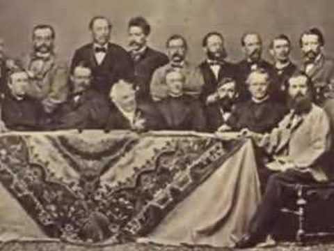
Click on the image above for more content
Lesson Review Questions
Recall
1. What is the blending theory of inheritance? Why did Mendel question this theory?
2. List the seven characteristics that Mendel investigated in pea plants.
3. How did Mendel control pollination in pea plants?
4. Describe in general terms Mendel's first set of experiments.
5. What was Mendel investigating with his second set of experiments? What was the outcome?
6. State Mendel's two laws.
Apply Concepts
7. Assume you are investigating the inheritance of stem length in pea plants. You cross-pollinate a short-stemmed plant with a long-stemmed plant. All of the offspring have long stems. Then, you let the offspring self-pollinate. Describe the stem lengths you would expect to find in the second generation of offspring.
8. If a purple-flowered, short-stemmed plant is crossed with a white-flowered, long-stemmed plant, would all of the purple-flowered offspring also have short stems? Why or why not?
Think Critically
9. If Darwin knew of Mendel's work, how might it have influenced his theory of evolution? Do you think this would have affected how well Darwin’s work was accepted?
10. Explain Mendel's laws in genetic terms, that is, in terms of chromosomes, genes, and alleles.
11. Explain the relationship between genotype and phenotype. How can one phenotype result from more than one genotype?
Points to Consider
With his first set of experiments, Mendel found that characteristics appear to skip generations. With his second set of experiments, he found that different characteristics are inherited independently of one another.
-
Why would this information be useful? Can you think of a practical application of Mendel's laws?
-
Could Mendel's laws be used to predict the characteristics of the offspring of a given set of parents? How do you think this might be done?
Mendelian Inheritance
Lesson Objectives
-
Define probability.
-
Explain how probability is related to inheritance.
-
Describe how to use a Punnett square.
-
Explain how Mendel interpreted the results of his experiments.
-
Describe complex patterns of inheritance.
Vocabulary
-
codominance
-
incomplete dominance
-
polygenic characteristic
-
probability
-
Punnett square
Introduction
Assume you are a plant breeder trying to develop a new variety of plant that is more useful to humans. You plan to cross-pollinate an insect-resistant plant with a plant that grows rapidly. Your goal is to produce a variety of plant that is both insect resistant and fast growing. What percent of the offspring would you expect to have both characteristics? Mendel's laws can be used to find out. However, to understand how Mendel's laws can be used in this way, you first need to know about probability.
Probability
Probability
is the likelihood, or chance, that a certain event will occur. The easiest way to understand probability is with coin tosses (see
Figure
below
). When you toss a coin, the chance of a head turning up is 50 percent. This is because a coin has only two sides, so there is an equal chance of a head or tail turning up on any given toss.
Tossing a Coin. Competitions often begin with the toss of a coin. Why is this a fair way to decide who goes first? If you choose heads, what is the chance that the toss will go your way?
If you toss a coin twice, you might expect to get one head and one tail. But each time you toss the coin, the chance of a head is still 50 percent. Therefore, it’s quite likely that you will get two or even several heads (or tails) in a row. What if you tossed a coin ten times? You would probably get more or less than the expected five heads. For example, you might get seven heads (70 percent) and three tails (30 percent). The more times you toss the coin, however, the closer you will get to 50 percent heads. For example, if you tossed a coin 1000 times, you might get 510 heads and 490 tails.
Probability and Inheritance
The same rules of probability in coin tossing apply to the main events that determine the genotypes of offspring. These events are the formation of gametes during meiosis and the union of gametes during fertilization.
Probability and Gamete Formation
How is gamete formation like tossing a coin? Consider Mendel's purple-flowered pea plants again. Assume that a plant is heterozygous for the flower-color allele, so it has the genotype
Bb
(see
Figure
below
). During meiosis, homologous chromosomes—and the alleles they carry—segregate and go to different gametes. Therefore, when the
Bb
pea plant forms gametes, the
B
and
b
alleles segregate and go to different gametes. As a result, half the gametes produced by the
Bb
parent will have the
B
allele and half will have the
b
allele. Based on the rules of probability, any given gamete of this parent has a 50 percent chance of having the
B
allele and a 50 percent chance of having the
b
allele.
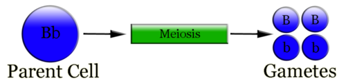
Formation of Gametes. Paired alleles always separate and go to different gametes during meiosis.
Probability and Fertilization
Which of these gametes joins in fertilization with the gamete of another parent plant? This is a matter of chance, like tossing a coin. Thus, we can assume that either type of gamete—one with the
B
allele or one with the
b
allele—has an equal chance of uniting with any of the gametes produced by the other parent. Now assume that the other parent is also
Bb
. If gametes of two
Bb
parents unite, what is the chance of the offspring having one of each allele like the parents (
Bb
)? What is the chance of them having a different combination of alleles than the parents (either
BB
or
bb
)? To answer these questions, geneticists use a simple tool called a Punnett square.
Using a Punnett Square
A
Punnett square
is a chart that allows you to easily determine the expected percents of different genotypes in the offspring of two parents. An example of a Punnett square for pea plants is shown in
Figure
below
. In this example, both parents are heterozygous for flower color (
Bb
). The gametes produced by the male parent are at the top of the chart, and the gametes produced by the female parent are along the side. The different possible combinations of alleles in their offspring are determined by filling in the cells of the Punnett square with the correct letters (alleles). At the link below, you can watch an animation in which Reginald Punnett, inventor of the Punnett square, explains the purpose of his invention and how to use it.
http://www.dnalc.org/view/16192-Animation-5-Genetic-inheritance-follows-rules-.html
An explanation of Punnett squares can be viewed at
http://www.youtube.com/user/khanacademy#p/c/7A9646BC5110CF64/13/D5ymMYcLtv0
(25:16).
Click on the image above for more content
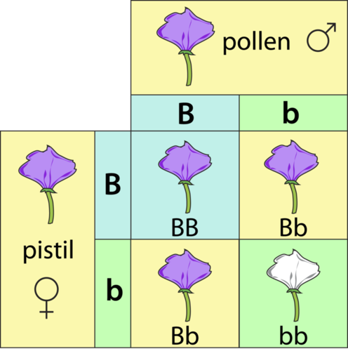
Punnett Square. This Punnett square shows a cross between two heterozygotes. Do you know where each letter (allele) in all four cells comes from?
An example of the use of a Punnett square can be viewed at
http://www.youtube.com/watch?v=nsHZbgOmVwg&feature=related
(5:40).
Predicting Offspring Genotypes
In the cross shown in
Figure
above
, you can see that one out of four offspring (25 percent) has the genotype
BB
, one out of four (25 percent) has the genotype
bb
, and two out of four (50 percent) have the genotype
Bb
. These percents of genotypes are what you would expect in any cross between two heterozygous parents. Of course, when just four offspring are produced, the actual percents of genotypes may vary by chance from the expected percents. However, if you considered hundreds of such crosses and thousands of offspring, you would get very close to the expected results—just like tossing a coin.
Predicting Offspring Phenotypes
You can predict the percents of phenotypes in the offspring of this cross from their genotypes.
B
is dominant to
b
, so offspring with either the
BB
or
Bb
genotype will have the purple-flower phenotype. Only offspring with the
bb
genotype will have the white-flower phenotype. Therefore, in this cross, you would expect three out of four (75 percent) of the offspring to have purple flowers and one out of four (25 percent) to have white flowers. These are the same percents that Mendel got in his first experiment.
Determining Missing Genotypes
A Punnett square can also be used to determine a missing genotype based on the other genotypes involved in a cross. Suppose you have a parent plant with purple flowers and a parent plant with white flowers. Because the
b
allele is recessive, you know that the white-flowered parent must have the genotype
bb
. The purple-flowered parent, on the other hand, could have either the
BB
or the
Bb
genotype. The Punnett square in
Figure
below
shows this cross. The question marks (?) in the chart could be either
B
or
b
alleles.
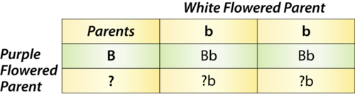
Punnett Square: Cross Between White-Flowered and Purple-Flowered Pea Plants. This Punnett square shows a cross between a white-flowered pea plant and a purple-flowered pea plant. Can you fill in the missing alleles? What do you need to know about the offspring to complete their genotypes?
Can you tell what the genotype of the purple-flowered parent is from the information in the Punnett square? No; you also need to know the genotypes of the offspring in row 2. What if you found out that two of the four offspring have white flowers? Now you know that the offspring in the second row must have the
bb
genotype. One of their
b
alleles obviously comes from the white-flowered (
bb
) parent, because that’s the only allele this parent has. The other
b
allele must come from the purple-flowered parent. Therefore, the parent with purple flowers must have the genotype
Bb
.
Punnett Square for Two Characteristics
When you consider more than one characteristic at a time, using a Punnett square is more complicated. This is because many more combinations of alleles are possible. For example, with two genes each having two alleles, an individual has four alleles, and these four alleles can occur in 16 different combinations. This is illustrated for pea plants in
Figure
below
. In this cross, both parents are heterozygous for pod color (
Gg
) and seed color (
Yy
).

Punnett Square for Two Characteristics. This Punnett square represents a cross between two pea plants that are heterozygous for two characteristics. G represents the dominant allele for green pod color, and g represents the recessive allele for yellow pod color. Y represents the dominant allele for yellow seed color, and y represents the recessive allele for green seed color.
How Mendel Worked Backward to Get Ahead
Mendel used hundreds or even thousands of pea plants in each experiment he did. Therefore, his results were very close to those you would expect based on the rules of probability. For example, in one of his first experiments with flower color, there were 929 plants in the F2 generation. Of these, 705 (76 percent) had purple flowers and 224 (24 percent) had white flowers. Thus, Mendel's results were very close to the 75 percent purple and 25 percent white you would expect by the laws of probability for this type of cross. Of course, Mendel had only phenotypes to work with. He knew nothing about genes and genotypes. Instead, he had to work backward from phenotypes and their percents in offspring to understand inheritance. From the results of his first set of experiments, Mendel realized that there must be two factors controlling each of the characteristics he studied, with one of the factors being dominant to the other. He also realized that the two factors separate and go to different gametes and later recombine in the offspring. This is an example of Mendel's good luck. All of the characteristics he studied happened to be inherited in this way. Mendel also was lucky when he did his second set of experiments. He happened to pick characteristics that are inherited independently of one another. We now know that these characteristics are controlled by genes on nonhomologous chromosomes. What if Mendel had studied characteristics controlled by genes on homologous chromosomes? Would they be inherited together? If so, how do you think this would have affected Mendel's conclusions? Would he have been able to develop his second law of inheritance? To better understand how Mendel interpreted his findings and developed his laws of inheritance, you can visit the following link. It provides an animation in which Mendel explains how he came to understand heredity from his experimental results.
http://www.dnalc.org/view/16154-Animation-2-Genes-Come-in-Pairs.html
Non-Mendelian Inheritance
The inheritance of characteristics is not always as simple as it is for the characteristics that Mendel studied in pea plants. Each characteristic Mendel investigated was controlled by one gene that had two possible alleles, one of which was completely dominant to the other. This resulted in just two possible phenotypes for each characteristic. Each characteristic Mendel studied was also controlled by a gene on a different (nonhomologous) chromosome. As a result, each characteristic was inherited independently of the other characteristics. Geneticists now know that inheritance is often more complex than this.
Codominance and Incomplete Dominance
A characteristic may be controlled by one gene with two alleles, but the two alleles may have a different relationship than the simple dominant-recessive relationship that you have read about so far. For example, the two alleles may have a codominant or incompletely dominant relationship. The former is illustrated by the flower in
Figure
below
, and the latter in
Figure
below
.
Codominance
Codominance
occurs when both alleles are expressed equally in the phenotype of the heterozygote. The red and white flower in the figure has codominant alleles for red petals and white petals.
Incomplete Dominance
Incomplete dominance
occurs when the dominant allele is not completely dominant. Expression of the dominant allele is influenced by the recessive allele, and an intermediate phenotype results. The pink flower in the figure has an incompletely dominant allele for red petals and a recessive allele for white petals.
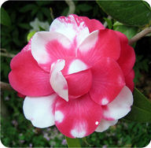
Codominance. The flower has red and white petals because of codominance of red-petal and white-petal alleles.
Incomplete Dominance. The flower has pink petals because of incomplete dominance of a red-petal allele and a recessive white-petal allele.
Multiple Alleles
Many genes have multiple (more than two) alleles. An example is ABO blood type in humans. There are three common alleles for the gene that controls this characteristic. The allele for type A is codominant with the allele for type B, and both alleles are dominant to the allele for type O. Therefore, the possible phenotypes are type A, B, AB, and O. Do you know what genotypes produce these phenotypes?
Polygenic Characteristics
Polygenic characteristics
are controlled by more than one gene, and each gene may have two or more alleles. The genes may be on the same chromosome or on nonhomologous chromosomes.
-
If the genes are located close together on the same chromosome, they are likely to be inherited together. However, it is possible that they will be separated by crossing-over during meiosis, in which case they may be inherited independently of one another.
-
If the genes are on nonhomologous chromosomes, they may be recombined in various ways because of independent assortment.
For these reasons, the inheritance of polygenic characteristics is very complicated. Such characteristics may have many possible phenotypes. Skin color and adult height are examples of polygenic characteristics in humans. Do you have any idea how many phenotypes each characteristic has?
Effects of Environment on Phenotype
Genes play an important role in determining an organism’s characteristics. However, for many characteristics, the individual’s phenotype is influenced by other factors as well. Environmental factors, such as sunlight and food availability, can affect how genes are expressed in the phenotype of individuals. Here are just two examples:
-
Genes play an important part in determining our adult height. However, factors such as poor nutrition can prevent us from achieving our full genetic potential.
-
Genes are a major determinant of human skin color. However, exposure to ultraviolet radiation can increase the amount of pigment in the skin and make it appear darker.
Lesson Summary
-
Probability is the chance that a certain event will occur. For example, the probability of a head turning up on any given coin toss is 50 percent.
-
Probability can be used to predict the chance of gametes and offspring having certain alleles.
-
A Punnett square is a chart for determining the expected percents of different genotypes and phenotypes in the offspring of two parents.
-
Mendel used the percents of phenotypes in offspring to understand how characteristics are inherited.
-
Many characteristics have more complex inheritance patterns than those studied by Mendel. They are complicated by factors such as codominance, incomplete dominance, multiple alleles, and environmental influences.
Lesson Review Questions
Recall
1. Define probability. Apply the term to a coin toss.
2. How is gamete formation like tossing a coin?
3. What is a Punnett square? How is it used?
4. What information must you know to determine the phenotypes of different genotypes for a gene with two alleles?
5. Based on the results of his experiments, what did Mendel conclude about the factors that control characteristics such as flower color?
Apply Concepts
6. Draw a Punnett square of an
Ss
x
ss
cross. The S allele codes for long stems in pea plants and the s allele codes for short stems. If S is dominant to s, what percent of offspring would you expect to have each phenotype?
7. What letter should replace the question marks (?) in this Punnett square? Explain how you know.
Think Critically
8. Explain how Mendel used math and probability to understand the results of his experiments.
9. Compare and contrast codominance and incomplete dominance.
10. Mendel investigated stem length, or height, in pea plants. What if he had investigated human height instead? Why would his results have been harder to interpret?
Points to Consider
Like most of the characteristics of living things, the characteristics Mendel studied in pea plants are controlled by genes. All the cells of an organism contain the same genes, because all organisms begin as a single cell. Most of the genes code for proteins.
-
How is the information encoded in a gene translated into a protein? Where does this occur, and what processes are involved?
-
If cells have the same genes, how do you think different cells arise in an organism? For example, how did you come to have different skin, bone, and blood cells if all of your cells contain the same genes?
Opening image copyright chris2766, 2013.
http://www.shutterstock.com
. Used under license from Shutterstock.com.
References
-
William Bateson.
http://en.wikipedia.org/wiki/File:Gregor_Mendel_Monk.jpg
. Public Domain
-
CK-12 Foundation. . CC-BY-NC-SA 3.0
-
Noah Elhardt.
http://commons.wikimedia.org/wiki/File:Englishtitles2-1.jpg
. Public Domain
-
CK-12 Foundation. . CC-BY-NC-SA 3.0
-
CK-12 Foundation. . CC-BY-NC-SA 3.0
-
CK-12 Foundation. . CC-BY-NC-SA 3.0
-
Image copyright Anyka, 2010.
http://www.shutterstock.com
. Used under license from Shutterstock.com.
-
CK-12 Foundation. . CC-BY-NC-SA 3.0
-
CK-12 Foundation. . CC-BY-NC-SA 3.0
-
CK-12 Foundation. . CC-BY-NC-SA 3.0
-
CK-12 Foundation. . CC-BY-NC-SA 3.0
-
Darwin Cruz.
http://commons.wikimedia.org/wiki/File:Co-dominance_Rhododendron.jpg
. CC-BY 2.0
-
Sandy Schultz.
http://www.flickr.com/photos/chatblanc1/4788366795/
. CC-BY 2.0
{kind=link}
{kind=link}
{kind=link}